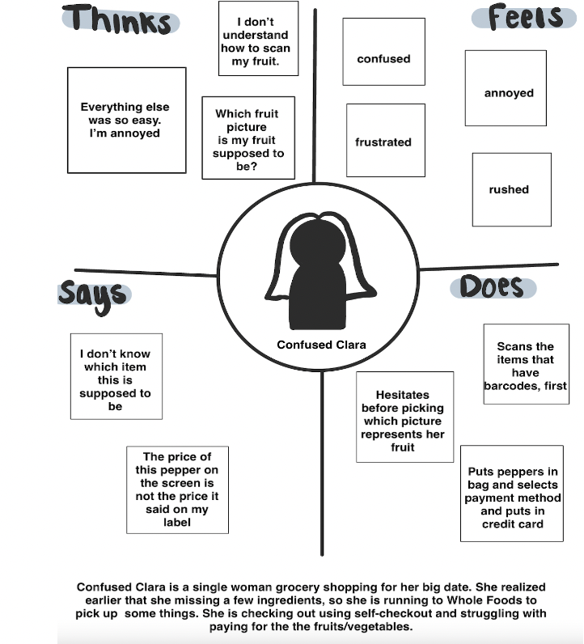
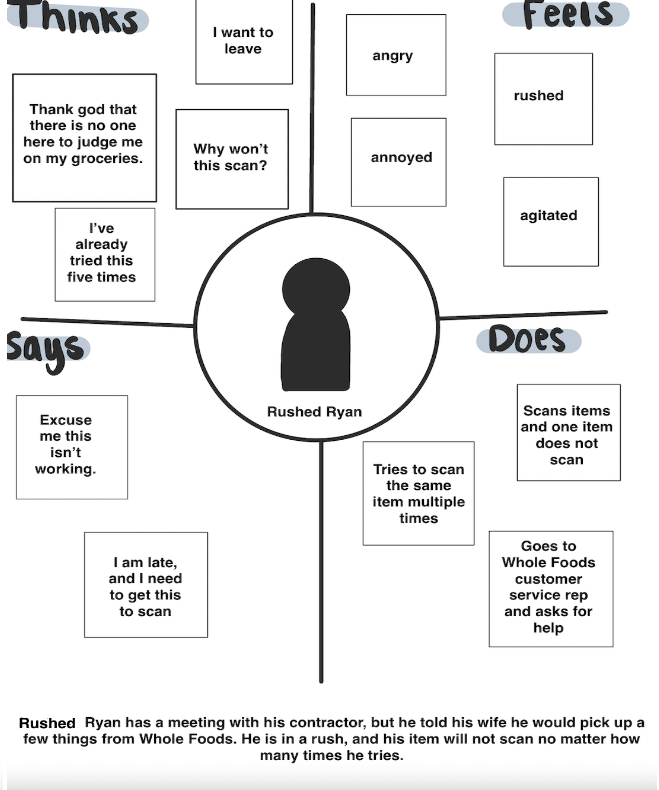
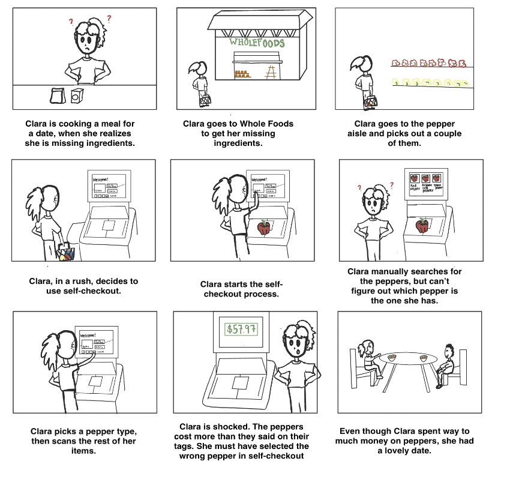
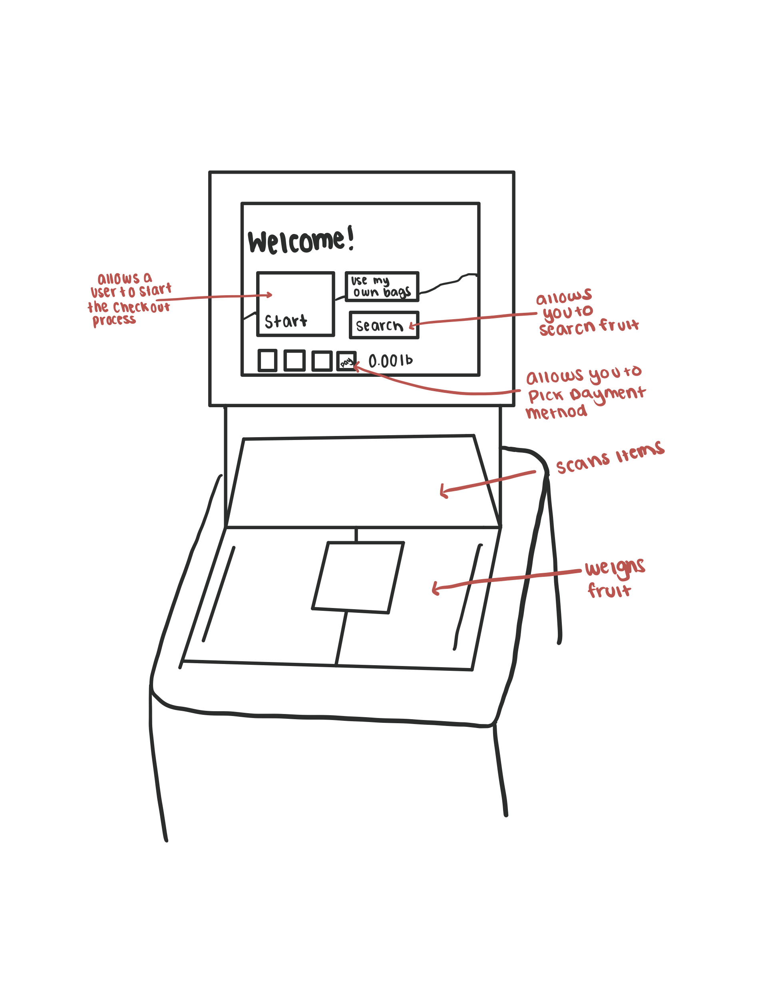

Click here to check out this fun website!
Why WholeFoods?
When I was in high school I would always go with my mom to WholeFoods. It was always such a fun and
special bonding time which I loved. I especially appreciated it when I came back from college, and
we would use the time to catch up on life. So, I decided to look into WholeFoods for this project.
What is this website for?
For class we had to investigate a problem with an interface. I chose the self-checkout station
at WholeFoods. We had to watch users using this interface and note what we observed.
Then, we had to ask the users questions to get a better guage of their experience. From these interviews
we created personas to create a visual representation of what these indivudals were thinking and experiencing
using this interface .


From these personas I created a storyboard to show how a typical user interacts with the interface. This is used
to help visualize the problem with the interface.

From these observations I learned that customers had a hard time scanning fruits and vegtables.
They were often confused on which fruit or vegtable they were scanning, and how to scan multiple fruits. This
was my motivation for making this the focus of my storyboard.
How was this website created?
Languages Used:
HTML and CSS
My designs:
For this project I made a couple of my own designs using Procreate to help make my website
fit my vision.

What I learned
I learned how to observe users using an interface and create a typical persona for a user, and from a persona
create a storyboard of a typical expereince for this interface.
I learned the importance of creating a narrative when designing interfaces, and how important it to make the interface clear,
so it is easy for users to use in the intended way.